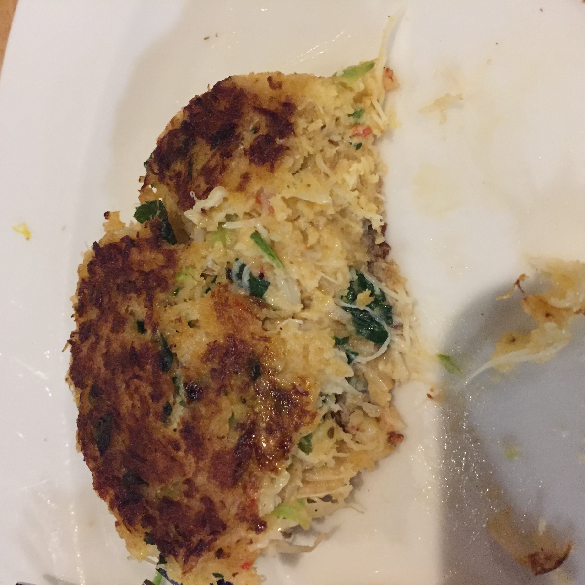
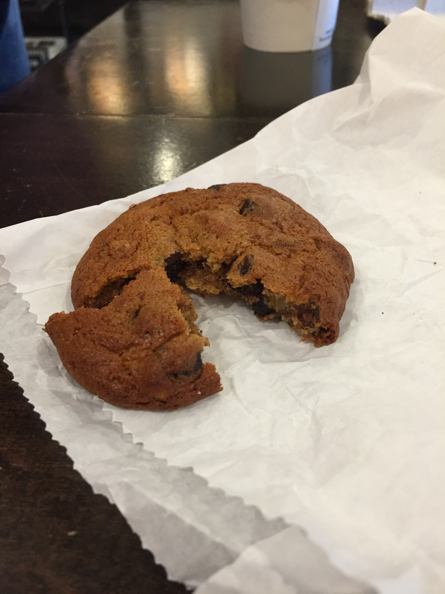

In this mass of multiculturalism you have people from every corner of the world and walk of life. From gay or straight to something in between, it’s all here. Birthed from this blend of diverse cultures and societies comes the monstrously diverse food scene, the art galleries, the Symphony, the Opera and the playhouses. All of which render fabulous and, many times, even unconventional depictions of the arts in its many forms. Pushing the limits. This is the San Francisco that I know and love!
So, let’s begin!
When I’m in San Francisco I almost always hit up this tiny, dark little blues club called Biscuits & Blues. It’s a great spot to have a drink as the funky ‘whaaaa-whaaaa’ of the harp (read: harmonica) as it laces a classic blues track with a slathering of funk. It’s a great excuse to let your hair down and let your worries fade away, at least in the moment, to feel the blues in your soul on a deeply personal and enigmatic level. But maybe that’s just me!
Let’s start this adventure at Fisherman’s Wharf. This is where you'll find some of the most delicious and freshest Dungeness Crab. A local favorite here as because of the delicate texture and mildly sweet, buttery flavor. OMG! Sooo good! You have to try this, seafood lovers. But be careful as you just might become addicted, they’re that good! So, needless to say, if you’re anywhere near the wharf then do yourself a huge favor and indulge in anything Dungeness Crab. I went to the bay area looking for the BEST crabcakes in SF and, upon the advice of a local, was directed to Scoma’s (est. 1965, Al Scoma Way Pier 47, Fisherman’s Wharf). The crabcakes were lightly fried with a delicate, crisp exterior followed by the mildly sweet, buttery flavor of the moist and tender crabmeat. IT. WAS. DELICIOUS. If you can find this place, go!
One of my first stops was at a restaurant at Fisherman’s Wharf called Scoma’s (1965 Al Scoma Way Pier 47, Fisherman’s Wharf). I went to the bay area looking for the BEST crabcakes in SF and, upon the advice of a local, was directed to this restaurant. I wasn’t let down.
For the appetizer of course I ordered the crabcakes and was immediately pleased by the lightly fried, lightly crisp texture on the outside followed by the mildly sweet, buttery flavor of the moist and tender crabmeat. IT. WAS. DELICIOUS. If you can find this place, go!
The place is Magic! On the weekends you can find the square lined with vendors selling goods varying from jewelry to clothing to food to paintings. There are painting classes with local artists, musical or otherwise from every culture, era, or walk of life. It’s a sight to behold and hard to fathom, if you really think about it. In Union square, you get a sense of what it’s like to live in this city. An experience of memorable proportions and should be on your bucket list of excursions.
If you have the opportunity this is another of many fantastic places to eat! Very classy yet casual interior with an expertly trained staff to offer you a pleasurable dining experience. I had the halibut and was blown away by the gorgeous presentation as well as the buttery, rich and somehow still lite, flavor. it looked and tasted absolutely delicious.
If you are one of those who shy away from eating the bountiful offerings of the sea one can also find classic american classics such as burgers, fries and steak & taters! But for the more adventurous palate there’s something a touch more international in this Cultural melting pot. There’s Chinatown which boasts the largest Chinese-American population in the U.S. as well as an abundance of flavorful cuisine. A person can hear, see and feel the heartbeat Chinese/American society here. Definitely an area to explore more in the future!
Bright, colorful and full of life! A beacon for every ‘alternative’ lifestyle. It feels a bit strange to say alternative in SF. You will notice when in the city, walking amongst the locals, ‘alternative’ is the accepted norm here and it feels, well… quite normal. But really, what is normal? And who gets to decides that? And why? This bright, lively and happy neighborhood was one of the first gay neighborhoods in the United States as well as home to a personally beloved shop selling delicious and playfully named cookies.
Hot Cookie, home to the chocolate delight known as ‘The Fudge Packer’ and the gluten-free ‘Hunky Monkey’, a mixture of peanut butter and chocolate, or even something a bit more subdued (in name, not flavor) like the peanut butter, snickerdoodle, or chocolate chip cookies. From the rainbow crosswalk to the rainbow flags decorating nearly every wall or business, there’s definitely no question as to the sexual proclivities of this neighborhood. It’s wonderful to see how far we’ve come as a nation. YaY!!
1 Embarcadero is home to an assortment of businesses from food and wine to soap and cheese. An offering of all things pleasurable to the human senses! There’s a place called the Cowgirl Creamery, co-founded by veterans of the kitchen Peggy Smith, of Chez Panisse and Sue Conley, Chef/co-founder of Bette’s Oceanview Diner.
A cheese lovers paradise, the Cowgirl creamery is located next door to the Cowgirl Sidekick Cafe and Milkbar. Aptly named, this is a deli-style restaurant uses the cheese and dairy products from next door at the Cowgirl Creamery. At the sidekick Cafe, a person can find some of the most expertly prepared sandwiches but the grilled cheese sandwiches here will always reign supreme in my book. Go here and have one for lunch, these sandwiches are simply DELICIOUS! Another must try!
As you stroll along the halls of the ferry building you will undoubtedly run across the Ferry Plaza Wine Merchants. Here, there is a significance placed upon the wines of Northern-California and the Pacific-Northwest. But never fear, you can still find good wines from around the world! This is a popular weekend/after work, mid-day or anytime hangout and another must try for any wine lover. (sure, I’ll have another glass!)
Thank you for letting me share these experiences with you and, if you ever make it to San Francisco, hopefully this will leave you a few decent recommendations. And, at the very least help to guide you in the right direction within this wonderful city.
Stay tuned for more.